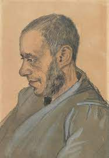

OBRAS MAESTRAS
Auto retrato como pintor
Auto retrato con sombrero
A las puertas de la eternidad

Retrato de Josef Blok
El dormitorio
Un par de zapatos de cuero
Los comedores de patatas
La noche estrellada
Los girasoles
Anciana de Arles